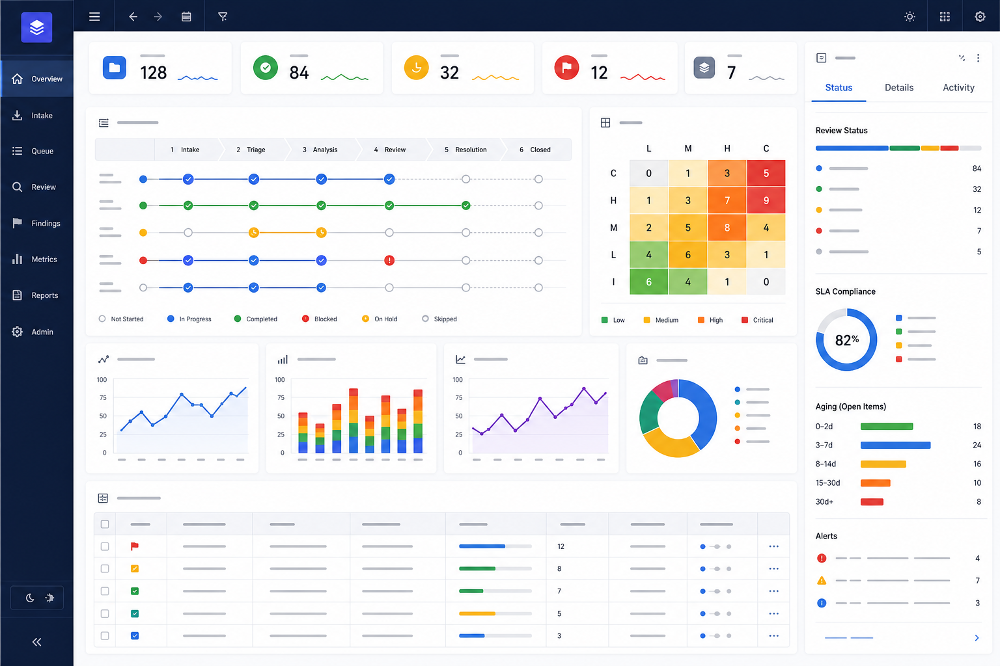

{kind=link}
Product
Confirm renewal language, pricing caveats, and whether plan changes apply immediately or at the next renewal.
Generated readiness report
Review the generated migration plan before sending it to implementation, support, and customer success teams.
The migration can proceed after owners confirm rollback messaging, support coverage, billing-plan communication, and customer-success staffing for the first two waves.
Commentary HTML Review should make this generated report readable while keeping source inspection and review threads close by.
Activate visual annotation and select a rectangular region. Reviewers can zoom into the dashboard, comment on a specific risk cell, or identify an unclear ownership handoff without altering the underlying artifact.

The SVG above is intentionally inline and static. The source-backed workflow is also available as a standalone SVG artifact.
| Risk | Owner | Status | Reviewer prompt |
|---|---|---|---|
| Billing plan copy implies immediate renewal changes | Product | Needs review | Does this language match the billing system? |
| Support fallback script is incomplete | Support | Needs owner | Can a frontline rep answer the first ticket? |
| API migration steps match implementation branch | Engineering | Ready | Verify job names against the deployment runbook. |
| Customer success staffing covers EMEA launch morning | Success | Needs confirmation | Name the launch-room owner before publish. |
Confirm renewal language, pricing caveats, and whether plan changes apply immediately or at the next renewal.
Prepare a first-response macro that explains static HTML sandboxing, provider access, and rollback ownership.
Verify migration jobs, audit logging, and a disable path that does not delete existing review threads.
Schedule launch-room coverage and identify customers whose private repositories need OAuth verification before rollout.